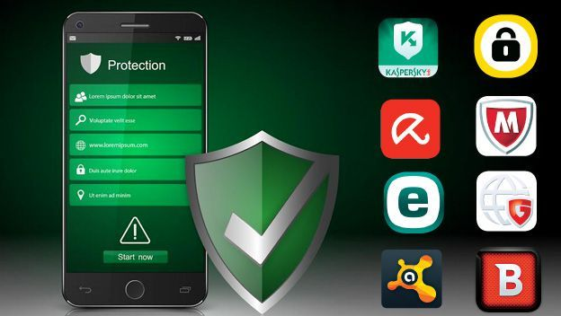

Les logiciels utiles
Il existe des logiciels pour nous aider a nous proteger.
L'antivirus
Un antivirus detecte et supprime les virus. C'est obligatoire d'en avoir un.
Quelques antivirus connus :
- Windows Defender (gratuit avec Windows)
- Avast (gratuit)
- Kaspersky (payant)
Le pare-feu
Le pare-feu bloque les connexions suspectes. Windows en a un deja.
Les gestionnaires de mots de passe
Ces outils gardent tous tes mots de passe en securite.
| Outil | Type |
|---|---|
| Bitwarden | Gestionnaire mots de passe |
| Windows Defender | Antivirus |
| Malwarebytes | Anti-malware |
Attention
Les outils c'est bien mais ca ne remplace pas la vigilance !